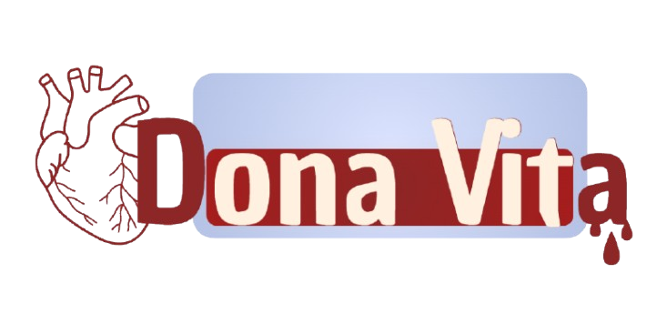

Acompanhe os níveis críticos de estoques por tipo sanguíneo, encontre o hemocentro mais próximo de sua cidade e agende seu ato de amor.
Veja os tipos sanguíneos com maior urgência nos bancos de sangue cadastrados. Quanto maior a porcentagem, mais crítica é a necessidade de doação.
Os doadores de tipos O- e O+ são os mais solicitados para cirurgias e emergências hospitalares.
Todo o caminho da doação é acompanhado por profissionais capacitados, garantindo total conforto e biossegurança.
Apresentação de documento oficial com foto, atualização de dados de contato e registro no sistema do hemocentro.
Entrevista confidencial para avaliar seu estado de saúde, checagem de sinais vitais, pressão arterial e teste de hemoglobina.
Coleta de aproximadamente 450 ml de sangue com material 100% descartável, estéril e sob supervisão especializada.
Momento de relaxar, hidratar-se e desfrutar do lanche oferecido para restabelecer os níveis de energia do seu corpo.
Responda a 5 perguntas rápidas e descubra sua aptidão prévia para doação.
Pesquise por sua cidade e confira o nível do estoque de sangue em tempo real.
| Tipo Sanguíneo | Pode Doar Para | Pode Receber De |
|---|---|---|
| O- | Todos (Doador Universal) | Apenas O- |
| O+ | A+, B+, AB+, O+ | O+, O- |
| A- | A+, A-, AB+, AB- | A-, O- |
| A+ | AB+, A+ | A+, A-, O+, O- |
| B- | B+, B-, AB+, AB- | B-, O- |
| B+ | B+, AB+ | B+, B-, O+, O- |
| AB- | AB+, AB- | A-, B-, AB-, O- |
| AB+ | Apenas AB+ | Todos (Receptor Universal) |
Veja como pequenos gestos mantêm os batimentos do mundo vivos. Deixe seu relato também!
Seu depoimento impulsiona mais pessoas a doarem!